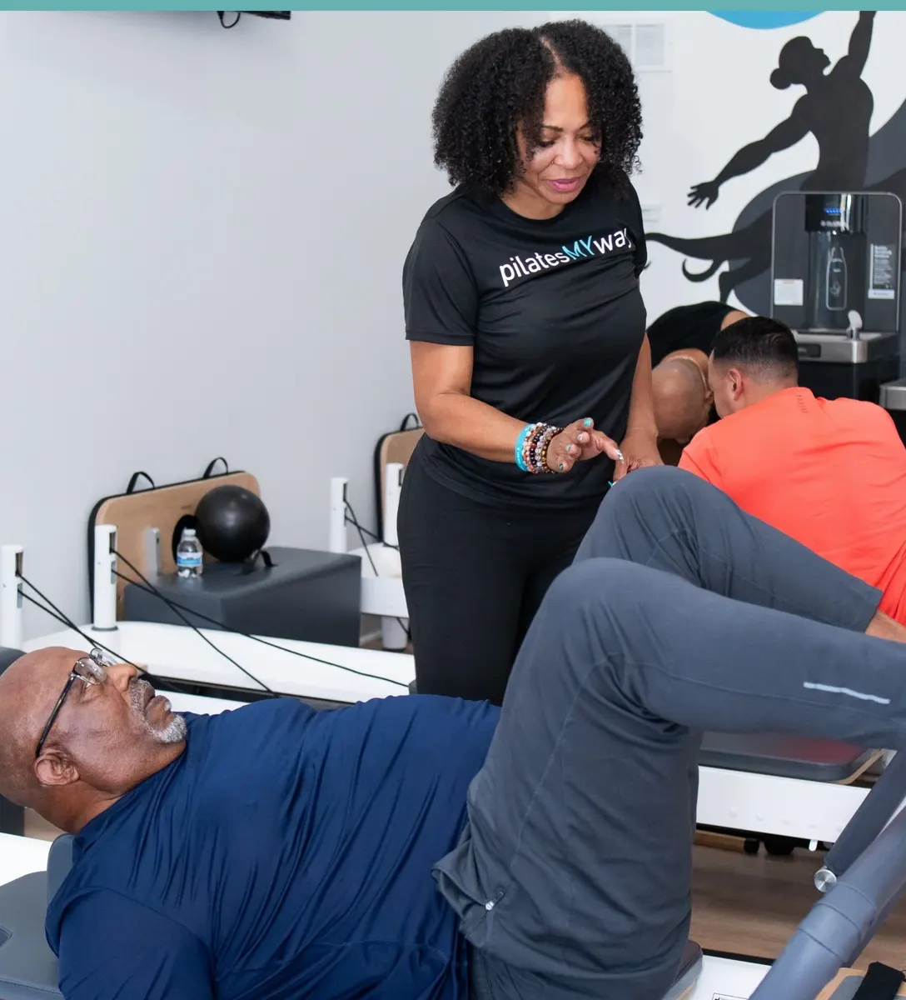
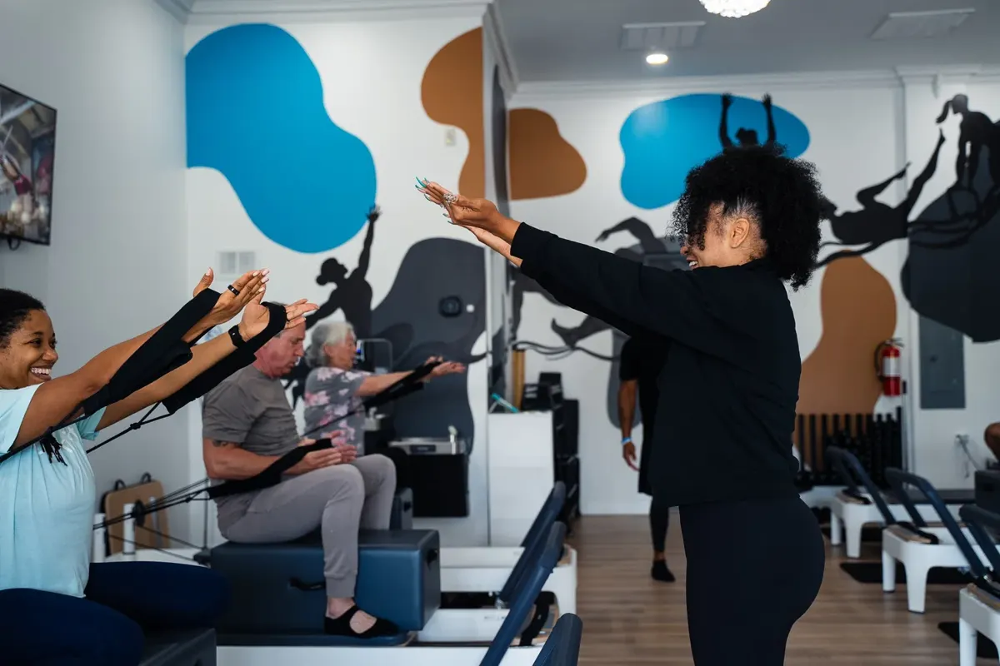
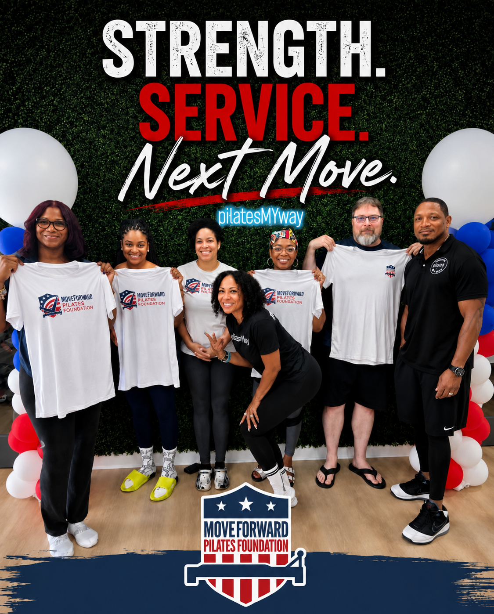

Small, coached reformer classes about 25 minutes from Ladysmith, at Four Mile Fork in Fredericksburg. Army veteran-owned, 5.0 on Google, and built for every starting point.
From Ladysmith it's a straight run up Route 1 or I-95 to Four Mile Fork, about 25 minutes, and from Bowling Green about the same.
Our clients drive in because the classes are small, the coaching is personal, and every body is welcome: beginners, active adults, people rebuilding after an injury, and military families.
No downtown traffic, no paid parking. Pull in at Four Mile Fork.
Small, coached classes on 12 Balanced Body reformers, 7 days a week.
Army veteran-owned. See our military families page.

Slow Burn Foundations is your first class: step-by-step coaching on the reformer to build strength and flexibility, no experience needed.
See what this class is like →
Progressive, strength-focused classes that tone, lengthen and build power, control and endurance.
See what this class is like →
Supportive programming for rebuilding strength, flexibility and confidence after time away or an injury.
See what this class is like →
A class built for men who lift, run or sit at a desk all day. Strength without the pounding.
See what this class is like →
Slower, restorative stretch-focused evenings and community events. Join the text list to hear first.
See what this class is like →
Owned by Army veterans and proud partners of the Move Forward Pilates Foundation. Service members, military spouses and veterans from Quantico, Dahlgren and beyond train here.
See what this class is like →“The facility is always clean, welcoming, and well-maintained. The instructors are knowledgeable, supportive, and make everyone feel comfortable regardless of fitness level.”
Jessica SalvadorGoogle review“The studio is so clean, aesthetic, and welcoming from the moment you walk in. I took a class recently and my body felt amazing afterward.”
Kiera SimmonsGoogle review“As a physical therapist, I especially appreciate the emphasis on quality movement, body awareness, and proper technique.”
TaLisa Cummings-TaylorGoogle reviewYes. Your first class is Slow Burn Foundations, with clear, step-by-step coaching on the reformer.
Comfortable workout clothes. Grip socks are required (we sell them). Bring water and arrive 10 minutes early.
Yes. Many clients train with modifications. Text us before class so we can plan for you. If you're under a doctor's care, get clearance first.
21 days from purchase.
Classes run 7 days a week. See the schedule above for times.
10827 Courthouse Rd, Ste C & D, Fredericksburg, VA 22408. Minutes from downtown Fredericksburg, Spotsylvania Courthouse and southern Stafford.
Call (540) 274-2377
Text (540) 274-2377
Email salesteam@pilatesmyway.com
Classes 7 days a week